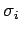
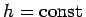

Inhalt Index DeskTop Bronstein

 Wahrscheinlichkeitsrechnung und Mathematische Statistik Theorie der Meßfehler Meßfehler und ihre Verteilung
Wahrscheinlichkeitsrechnung und Mathematische Statistik Theorie der Meßfehler Meßfehler und ihre Verteilung


Bei direkten Messungen gleicher Genauigkeit, d.h., wenn für alle n Messungen die gleiche Streuung  realisiert werden kann, spricht man von Messungen mit gleicher Genauigkeit . In diesem Falle führt die Methode der kleinsten Quadrate auf die in (16.206, 16.209, 16.211) angegebenen Fehlergrößen.